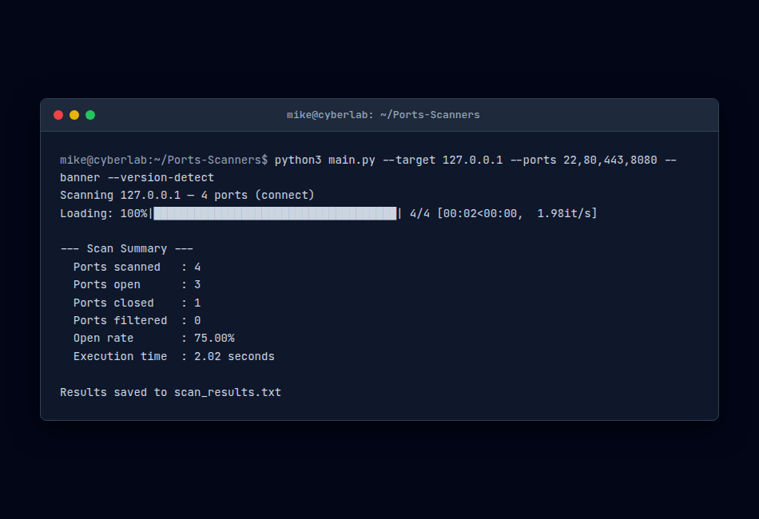
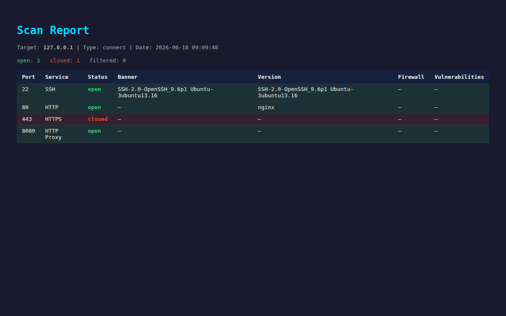

Concept du Projet & Comparaison avec les Scanners Standards
Dans l'audit de sécurité, la cartographie de la surface d'attaque est la première étape critique. Les outils standard comme Nmap sont puissants, mais ils fonctionnent comme des binaires compilés lourds, difficiles à scripter de manière dynamique, à personnaliser pour des formats d'exportation spécifiques ou à interfacer directement avec des bases de données web en temps réel.
Le Scanner de Ports Réseau & Analyseur de Vulnérabilités est un outil de reconnaissance réseau écrit en Python. Il associe la cartographie réseau via des sockets bruts à un enrichissement asynchrone des vulnérabilités :
- Double modèle de scan : Takes TCP Connect sockets et Scapy SYN stealth scans.
- Requêtes intégrées de bases de données de menaces : Récupère les bannières de service et les associe de manière asynchrone à la base de données NVD du NIST.
- Contrôles d'évasion intégrés : Limitations de débit de paquets et délais aléatoires (jitter) pour contourner les IDS.

Optimisations Réseau & Performance des Protocoles
L'exécution de scans simultanés sur de grands sous-réseaux nécessite d'optimiser les E/S réseau, les paramètres de cycle de vie des sockets et les débits de paquets :
> 1. Gestion du Processeur & Pool de Threads Simultanés
Pour scanner de grands réseaux sans saturer le processeur ou épuiser la mémoire, l'outil utilise un ThreadPoolExecutor. Il découpe les sous-réseaux en blocs et limite les threads actifs.

> 2. Optimisation des Sockets et Réutilisation d'Adresses
L'analyse de milliers de ports dans un court intervalle laisse de nombreux sockets à l'état TIME_WAIT. Le moteur configure SO_REUSEADDR et applique des délais de connexion agressifs pour libérer les sockets immédiatement.
> 3. Limitation de Débit & Jitter d'Évasion
Pour éviter de déclencher les pare-feux des IDS, le script implémente threading.Lock pour imposer une limite de débit globale et randomise l'ordre d'analyse des ports.
> 4. Construction de Paquets Bruts (Scapy L3 Injection)
Pour les scans furtifs, le scanner assemble des en-têtes IP/TCP personnalisés via Scapy, en envoyant un paquet SYN brut et en écoutant le retour SYN-ACK sans finaliser la connexion.
Référence des Commandes CLI
python3 main.py --target 192.168.1.0/24 --mode syn — Scan furtif SYN sur le sous-réseau local.
python3 main.py --target 10.0.2.15 --ports 22,80,443 --enrich — Scan des ports spécifiés & enrichissement NIST API.
python3 main.py --help — Affichage des options d'exportation (HTML, JSON, CSV, XML).